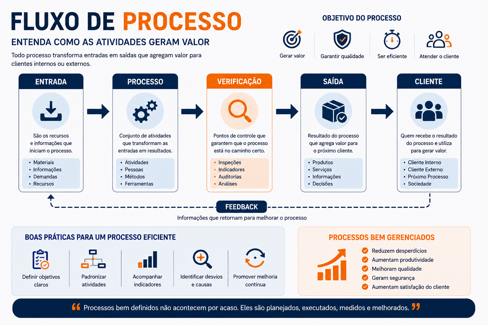
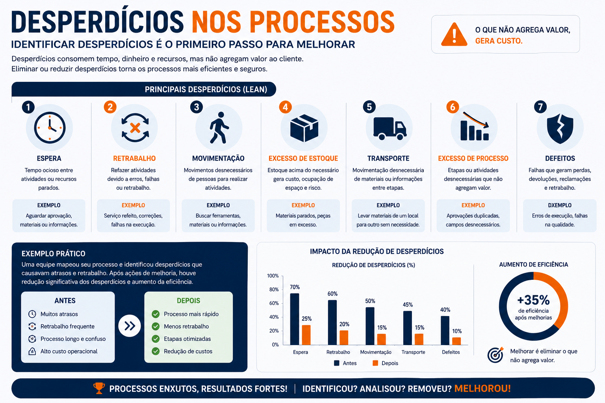
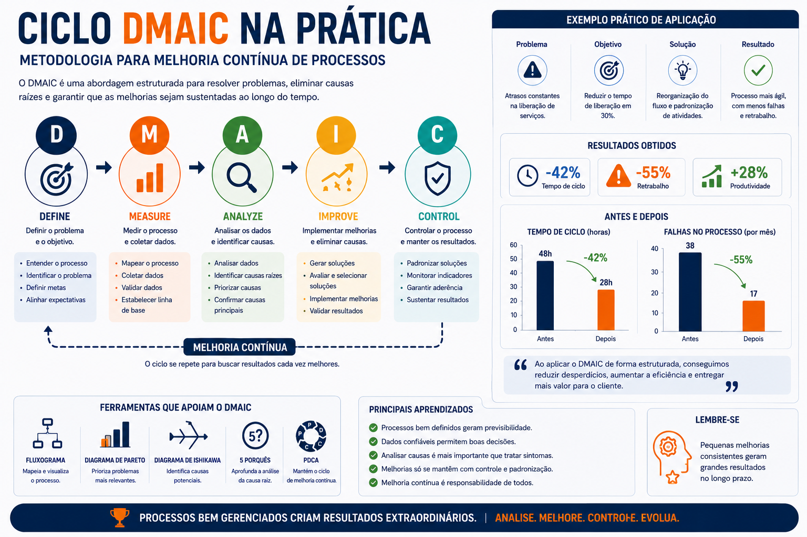

Duração
30 minutos
Nível
Intermediário
Área
Gestão
Parte
1 de 2
Processos estão em toda operação
Toda atividade operacional funciona através de processos. Mesmo quando eles não estão documentados, ainda existem etapas, decisões, entradas e saídas acontecendo.
Quanto mais organizado for o processo, maiores são as chances de:
Entendendo um fluxo de processo
Um processo normalmente possui: entrada, transformação, verificação e saída.
Processos organizados facilitam: controle, treinamento, padronização e melhoria contínua.

Padronização reduz variabilidade
Quando cada pessoa executa uma atividade de uma forma diferente, os resultados se tornam inconsistentes.
A padronização ajuda equipes a trabalharem de forma mais previsível, organizada e segura.
Organização
Processos organizados facilitam execução e acompanhamento.
Qualidade
Atividades padronizadas geram resultados mais consistentes.
Treinamento
Equipes aprendem mais rápido quando existe padrão definido.
Desperdícios escondidos no processo
Muitos desperdícios acontecem silenciosamente durante operações do dia a dia.
Esperas, movimentações desnecessárias, retrabalho e excesso de etapas reduzem eficiência e aumentam custos.

Indicadores ajudam a enxergar problemas
O que não é medido dificilmente melhora.
Indicadores ajudam operações a identificar gargalos, atrasos, desperdícios e oportunidades de melhoria.
Tempo
Medir tempo ajuda a identificar atrasos e gargalos operacionais.
Qualidade
Indicadores mostram falhas, retrabalho e perdas.
Produtividade
Permite acompanhar desempenho operacional e eficiência.
Introdução ao DMAIC
O DMAIC é uma metodologia utilizada para análise e melhoria contínua de processos.
Ele ajuda equipes a: identificar problemas, medir resultados, analisar causas e controlar melhorias.

Define
Definir o problema.
Measure
Medir dados e desempenho.
Analyze
Identificar causas.
Improve
Aplicar melhorias.
Control
Manter os resultados.
Continue para a Parte 2
Na próxima etapa do treinamento, você verá: